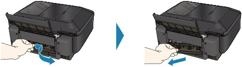
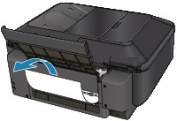
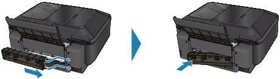
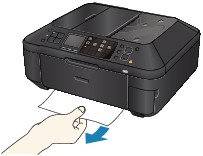

Remove the paper following the procedure below.
-
Detach the Rear Cover.
 -
Pull the paper out slowly.
 Note
Note-
Be careful not to touch the components inside the machine.
-
If you cannot pull the paper out, turn the machine off and turn it back on. The paper may be ejected automatically.
-
-
Attach the Rear Cover.
Push the left side of the Rear Cover until it is closed completely.

If you were not able to remove the paper out in step 2:
-
Remove the Cassette.
-
Pull the paper out slowly.
 -
If any paper is sticking out of the Cassette, remove the paper, align and reload the paper in the Cassette.
If you did not remove the jammed paper out in step 1 to 5 when automatic duplex printing, check the duplex transport section.
 Jammed Paper Is Not Removed out When Automatic Duplex PrintingNote
Jammed Paper Is Not Removed out When Automatic Duplex PrintingNote-
When reloading the paper into the machine, confirm that you are using the correct paper and are loading it into the machine correctly.
-
-
Insert the Cassette into the machine again, and press the OK button on the machine.
If you turned off the machine in step 2, all print jobs in queue are canceled. Reprint if necessary.
If you cannot remove the paper or the paper tears inside the machine, or if the paper jam error continues after removing the paper, contact the service center.